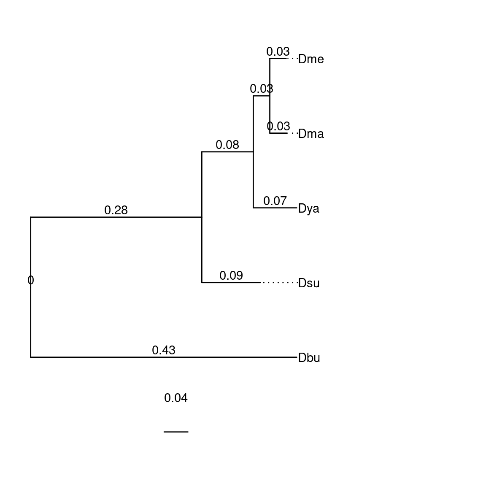
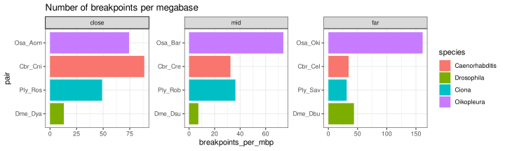
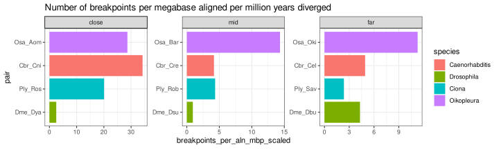
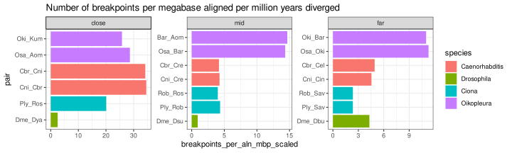
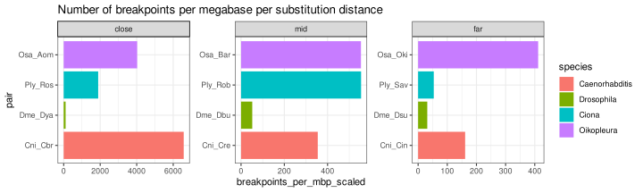

Scaling breakpoints
Michael Mansfield
Charles Plessy
13 October, 2023
Source:vignettes/ScalingBreakpoints.Rmd
ScalingBreakpoints.Rmd
knitr::opts_chunk$set(cache = TRUE)Introduction
In this vignette computes the observed number of breakpoints for a given species pair by a few key metrics:
- Millions of years since divergence
- Branch length (i.e., a kind of substitution rate)
- dN/dS
Panel D of Figure 7 was generated with this vignette (colors were edited by hand).
The core functions used here are maintained in our GenomicBreaks R package, which is fully documented at: https://oist.github.io/GenomicBreaks.
Setup
Load R packages and data
library('OikScrambling') |> suppressPackageStartupMessages()
library('dplyr') |> suppressPackageStartupMessages()
genomes <- OikScrambling:::loadAllGenomes()## Warning in runHook(".onLoad", env, package.lib, package): input string
## 'Génoscope' cannot be translated from 'ANSI_X3.4-1968' to UTF-8, but is valid
## UTF-8
## Warning in runHook(".onLoad", env, package.lib, package): input string
## 'Génoscope' cannot be translated from 'ANSI_X3.4-1968' to UTF-8, but is valid
## UTF-8
library('ggtree') |> suppressPackageStartupMessages()
library('treeio') |> suppressPackageStartupMessages()
library('phangorn') |> suppressPackageStartupMessages()
load("BreakPoints.Rdata")Service functions
toTreedata <- function(tree) as.treedata(midpoint(read.tree(text=tree)))
plotTree <- function(sp) {
ggtree(sp, ladderize=T) +
geom_tiplab(align=T) + hexpand(0.5) +
geom_text(aes(x=branch, label=round(branch.length,2)), nudge_y=0.1) +
geom_treescale() + geom_rootedge()
}Inputting distance metrics
The resulting trees are displayed to help proofchecking.
Oikopleura
species <- SimpleList()
species$Oikopleura <- "(Kum:0.01136111178249175555,((Osa:0.00925951950869623869,Aom:0.00920798155370218530)100:0.05729289951873162146,(Bar:0.00721724152898447612,Nor:0.00688754343189192098)100:0.05951986243208125943)100:0.31437914450027298896,Oki:0.01142149265410641150);" |> toTreedata()
plotTree(species$Oikopleura)Ciona
species$Ciona <- "(Rob:0.03128841990749874763,(Ros:0.01304087257513942937,Ply:0.01288782021364278871)100:0.02128682526879402057,Sav:0.55033545948338902232);" |> toTreedata()
plotTree(species$Ciona)Drosophila
The tree originates from https://github.com/SchriderLab/Drosophila_phylogeny, and the relevant clades were extracted with:
tree <- read.tree('Drosophila_phylogeny/tree/iqtree.tre')
tree <- drop.tip(tree, which(!tmp$tip.label %in% c('D_melanogaster', 'D_busckii', 'D_yakuba', 'D_subpulchrella', 'D_mauritiana')))
write.tree(tree, 'drosophila_4spp.newick')
species$Drosophila <- "(Dbu:0.3372973403,(Dsu:0.0947791254,(Dya:0.0703231461,(Dma:0.0280994984,Dme:0.0264284139)100_1_100:0.0267889071)100_1_100:0.0834632289)100_1_100:0.3712228549)100_1_100;" |> toTreedata()
plotTree(species$Drosophila)
Caenorhabditis
Tree topologies taken from https://zenodo.org/record/1402254/files/RAxML_species_tree.nwk
The Zenodo link also has trees calculated using ASTRAL and PhyloBayes. However, since the other trees here are ML trees, the RAxML tree was elected for maximum comparability.
species$Caenorhabditis <- ape::read.tree(text="(CGUAD:0.10367478589587060533,(((CSP43:0.12383810371576783882,CVIRI:0.15037624074929095697)100:0.01497242793907414826,((CPLIC:0.26149908669946614337,((DCORO:0.59783158562631621979,CMONO:0.24005751591713977988)100:0.04780411675113813846,CSP21:0.36368990218252150726)100:0.10208494374306537056)100:0.03524817284922288768,((CCAST:0.01140212554998711741,CANGA:0.01414003367272922800)100:0.05852891527717005854,CSP38:0.05923127343611131468)100:0.11896541306229711787)98:0.01073075219687256478)100:0.02583935505413810507,((CKAMA:0.05811607292620620674,((CELEG:0.04500887872372311138,CSP34:0.07438201522663016874)100:0.00705149839556874856,(((CLATE:0.00465806789922303816,CREMA:0.00437786777324163708)100:0.02881157060040358958,((CNIGO:0.00418426739023885358,CBRIG:0.00712154940320354219)100:0.02811281384583694601,(CSINI:0.01686763323477479329,(CSP26:0.01529017647605383778,CSP40:0.02038338447129417474)100:0.00329577341321305025)100:0.01374371022227172112)100:0.01161394824780575923)100:0.00600824892975430989,((CDOUG:0.02983523068133404899,CBREN:0.03506566315430653669)80:0.00382524869406435401,(CWALL:0.01854144710471255370,CTROP:0.02398428150833109909)100:0.01471009970302557951)100:0.00927549430957550110)100:0.00763851852828213371)100:0.00805135107229970441)100:0.01328077288786689257,((((CNOUR:0.00956145701022028879,CSP29:0.00805739385901662990)100:0.01930453335852322372,(CSP39:0.03253018121281636005,CSP28:0.02417332848702777315)100:0.00890124689939411802)100:0.00884911431899864341,CMACR:0.03525690105425406673)100:0.02033464491626665177,(CJAPO:0.08234400443891473631,(CAFRA:0.02943481705945342336,CSP32:0.02434121084253646969)100:0.04055371130568757865)79:0.00548050967800332942)100:0.00698694826746024816)100:0.06205429593773054836)100:0.02963813048003952413,CSP31:0.12329044085858320567);") |>
root("DCORO") |>
reorder.phylo(order='cladewise')
species$Caenorhabditis <- drop.tip(species$Caenorhabditis, which(!species$Caenorhabditis$tip.label %in% c('CELEG', 'CSP34', 'CREMA', 'CNIGO', 'CBRIG')))
species$Caenorhabditis$tip.label <- c('Cel', 'Cin', 'Cre', 'Cni', 'Cbr')
write.tree(species$Caenorhabditis)## [1] "((Cel:0.04500887872,Cin:0.07438201523)100:0.007051498396,(Cre:0.03318943837,(Cni:0.00418426739,Cbr:0.007121549403)100:0.03972676209)100:0.01364676746)100;"
species$Caenorhabditis <- as.treedata(species$Caenorhabditis)
plotTree(species$Caenorhabditis)Distances
With the species trees loaded, we can calculate per-pair branch
length distances using ape::cophenetic().
species_dist <- SimpleList()
species_dist$cophenetic <- lapply(species, function(sp) cophenetic.phylo(sp@phylo)) |> SimpleList()Tunicates
For tunicates, the distances expressed in million years are taken from the molecular clock analysis except for the same-species pairs where they are arbitrarily set to 3, as an upper-bound estimate. The rationale is that as we are testing for speed, using the maximally conceivable distance prevents us from overestimating that speed.
# These are taken from the molecular clock analysis.
species_dist$mya <- SimpleList()
species_dist$mya$Oikopleura <- data.frame(
'Oki'=c(0, 3, 24.5347, 24.5347, 24.5347),
'Kum'=c(3, 0, 24.5347, 24.5347, 24.5347),
'Osa'=c(24.5347, 24.5347, 0, 7.2383, 3),
'Bar'=c(24.5347, 24.5347, 7.2383, 0, 7.2383),
'Aom'=c(24.5347, 24.5347, 3, 7.2383, 0)
)
species_dist$mya$Ciona <- data.frame(
'Sav'=c(0, 101.4633, 101.4633, 101.4633),
'Rob'=c(101.4633, 0, 11.8551, 11.8551),
'Ply'=c(101.4633, 11.8551, 0, 3),
'Ros'=c(101.4633, 11.8551, 3, 0)
)Drosophila
For Drosophila, the numbers are taken from https://www.sciencedirect.com/science/article/pii/S0960982221014962 which links to https://github.com/SchriderLab/Drosophila_phylogeny. Note that the smallest distance here is 3.6 million years, close to our upper-bound estimate for same-species tunicate populations.
Caenorhabditis
See https://academic.oup.com/nar/article/46/3/1295/4793371 Figure S2 for all distances.
species_dist$mya$Caenorhabditis <- data.frame(
'Cin'=c(0, 30, 30, 30, NA),
'Cre'=c(30, 0, 25, 25, 30),
'Cbr'=c(30, 25, 0, 3.7, 30),
'Cni'=c(30, 25, 3.7, 0, 30),
'Cel'=c(NA, 30, 30, 30, 0)
)
species_dist$mya <- lapply(species_dist$mya, function(x) {
rownames(x) <- colnames(x)
x
}) |> SimpleList()Normalised breakpoint accumulation
bp_vs_dist <- function(query, target, wgo, dist_type="mya", species, extra = FALSE) {
dist_df <- species_dist[[dist_type]][[species]]
relevant_dist <- dist_df[rownames(dist_df)==query, colnames(dist_df)==target]
breakpoints <- wgo[wgo$type == "breakpoint region"]
wgo_size <- wgo |> width() |> sum()
wgo_size_mbp <- wgo_size / 1000000
aln_length <- wgo[wgo$type %in% c("collinear alignment", "isolated alignment")] |> width() |> sum()
breakpoints_per_scale = length(breakpoints)/relevant_dist
breakpoints_per_mbp = length(breakpoints)/wgo_size_mbp
breakpoints_per_aln_mbp <- length(breakpoints) / aln_length * 1e6
data.frame(
species = species,
query = query,
target = target,
pair = paste0(query, "_", target),
dist_type = dist_type,
dist = relevant_dist,
breakpoints = length(breakpoints),
breakpoints_per_scale = breakpoints_per_scale,
breakpoints_per_mbp = breakpoints_per_mbp,
breakpoints_per_mbp_scaled = breakpoints_per_mbp / relevant_dist,
breakpoints_per_aln_mbp = breakpoints_per_aln_mbp,
breakpoints_per_aln_mbp_scaled = breakpoints_per_aln_mbp / relevant_dist,
extra = extra)
}
mya_df <- rbind(
bp_vs_dist(query="Osa", target="Oki", wgo$Osa_Oki, dist_type="mya", "Oikopleura"),
bp_vs_dist(query="Oki", target="Bar", wgo$Oki_Bar, dist_type="mya", "Oikopleura", extra = TRUE),
bp_vs_dist(query="Osa", target="Bar", wgo$Osa_Bar, dist_type="mya", "Oikopleura"),
bp_vs_dist(query="Bar", target="Aom", wgo$Bar_Aom, dist_type="mya", "Oikopleura", extra = TRUE),
bp_vs_dist(query="Osa", target="Aom", wgo$Osa_Aom, dist_type="mya", "Oikopleura"),
bp_vs_dist(query="Oki", target="Kum", wgo$Oki_Kum, dist_type="mya", "Oikopleura", extra = TRUE),
bp_vs_dist(query="Ply", target="Sav", wgo$Ply_Sav, dist_type="mya", "Ciona"),
bp_vs_dist(query="Rob", target="Sav", wgo$Rob_Sav, dist_type="mya", "Ciona", extra = TRUE),
bp_vs_dist(query="Ply", target="Rob", wgo$Ply_Rob, dist_type="mya", "Ciona"),
bp_vs_dist(query="Rob", target="Ros", wgo$Rob_Ros, dist_type="mya", "Ciona", extra = TRUE),
bp_vs_dist(query="Ply", target="Ros", wgo$Ply_Ros, dist_type="mya", "Ciona"),
bp_vs_dist(query="Dme", target="Dbu", wgo$Dme_Dbu, dist_type="mya", "Drosophila"),
bp_vs_dist(query="Dme", target="Dsu", wgo$Dme_Dsu, dist_type="mya", "Drosophila"),
bp_vs_dist(query="Dme", target="Dya", wgo$Dme_Dya, dist_type="mya", "Drosophila"),
bp_vs_dist(query="Cni", target="Cbr", wgo$Cni_Cbr, dist_type="mya", "Caenorhabditis", extra = TRUE),
bp_vs_dist(query="Cni", target="Cre", wgo$Cni_Cre, dist_type="mya", "Caenorhabditis", extra = TRUE),
bp_vs_dist(query="Cni", target="Cin", wgo$Cni_Cin, dist_type="mya", "Caenorhabditis", extra = TRUE),
bp_vs_dist(query="Cbr", target="Cni", wgo$Cbr_Cni, dist_type="mya", "Caenorhabditis"),
bp_vs_dist(query="Cbr", target="Cre", wgo$Cbr_Cre, dist_type="mya", "Caenorhabditis"),
bp_vs_dist(query="Cbr", target="Cel", wgo$Cbr_Cel, dist_type="mya", "Caenorhabditis")
)
mya_df$species <- factor(mya_df$species, levels=c("Caenorhabditis","Drosophila", "Ciona", "Oikopleura"))
mya_df$pair <- factor(mya_df$pair,
levels=c("Cni_Cin", "Cbr_Cel", "Cni_Cre", "Cbr_Cre", "Cni_Cbr", "Cbr_Cni",
"Dme_Dbu", "Dme_Dsu", "Dme_Dya",
"Ply_Sav", "Rob_Sav", "Ply_Rob", "Rob_Ros", "Ply_Ros",
"Osa_Oki", "Oki_Bar", "Osa_Bar", "Bar_Aom", "Osa_Aom", "Oki_Kum"))
rownames(mya_df) <- NULL
mya_df$comp <- factor(c("far", "far", "mid", "mid", "close", "close",
"far", "far", "mid", "mid", "close",
"far", "mid", "close",
"close", "mid", "far", "close", "mid", "far"),
levels=c("close", "mid", "far"))
(mya_df)## species query target pair dist_type dist breakpoints
## 1 Oikopleura Osa Oki Osa_Oki mya 24.5347 8815
## 2 Oikopleura Oki Bar Oki_Bar mya 24.5347 8515
## 3 Oikopleura Osa Bar Osa_Bar mya 7.2383 4034
## 4 Oikopleura Bar Aom Bar_Aom mya 7.2383 4129
## 5 Oikopleura Osa Aom Osa_Aom mya 3.0000 4063
## 6 Oikopleura Oki Kum Oki_Kum mya 3.0000 4119
## 7 Ciona Ply Sav Ply_Sav mya 101.4633 4027
## 8 Ciona Rob Sav Rob_Sav mya 101.4633 4110
## 9 Ciona Ply Rob Ply_Rob mya 11.8551 4668
## 10 Ciona Rob Ros Rob_Ros mya 11.8551 4199
## 11 Ciona Ply Ros Ply_Ros mya 3.0000 6304
## 12 Drosophila Dme Dbu Dme_Dbu mya 46.8360 5951
## 13 Drosophila Dme Dsu Dme_Dsu mya 13.1873 984
## 14 Drosophila Dme Dya Dme_Dya mya 6.7256 1776
## 15 Caenorhabditis Cni Cbr Cni_Cbr mya 3.7000 9504
## 16 Caenorhabditis Cni Cre Cni_Cre mya 25.0000 3480
## 17 Caenorhabditis Cni Cin Cni_Cin mya 30.0000 2853
## 18 Caenorhabditis Cbr Cni Cbr_Cni mya 3.7000 9394
## 19 Caenorhabditis Cbr Cre Cbr_Cre mya 25.0000 3434
## 20 Caenorhabditis Cbr Cel Cbr_Cel mya 30.0000 3675
## breakpoints_per_scale breakpoints_per_mbp breakpoints_per_mbp_scaled
## 1 359.28705 161.499480 6.5824926
## 2 347.05947 135.508993 5.5231567
## 3 557.31318 73.885230 10.2075391
## 4 570.43781 75.692099 10.4571652
## 5 1354.33333 74.325365 24.7751216
## 6 1373.00000 64.753470 21.5844899
## 7 39.68923 31.374368 0.3092189
## 8 40.50726 34.708245 0.3420768
## 9 393.75459 36.322159 3.0638425
## 10 354.19355 34.975105 2.9502159
## 11 2101.33333 49.021171 16.3403902
## 12 127.06038 43.816224 0.9355245
## 13 74.61725 7.275702 0.5517204
## 14 264.06566 12.999373 1.9328198
## 15 2568.64865 74.345755 20.0934473
## 16 139.20000 27.341206 1.0936482
## 17 95.10000 22.411011 0.7470337
## 18 2538.91892 88.673653 23.9658522
## 19 137.36000 32.416237 1.2966495
## 20 122.50000 34.715517 1.1571839
## breakpoints_per_aln_mbp breakpoints_per_aln_mbp_scaled extra comp
## 1 276.71488 11.2785110 FALSE far
## 2 269.76013 10.9950449 TRUE far
## 3 103.79013 14.3390199 FALSE mid
## 4 106.10175 14.6583797 TRUE mid
## 5 85.95773 28.6525752 FALSE close
## 6 77.34894 25.7829811 TRUE close
## 7 238.82854 2.3538416 FALSE far
## 8 239.13353 2.3568476 TRUE far
## 9 51.62846 4.3549580 FALSE mid
## 10 47.49993 4.0067082 TRUE mid
## 11 60.25053 20.0835106 FALSE close
## 12 201.50338 4.3023182 FALSE far
## 13 12.15188 0.9214837 FALSE mid
## 14 16.89433 2.5119445 FALSE close
## 15 127.93670 34.5774875 TRUE close
## 16 106.71003 4.2684014 TRUE mid
## 17 136.47305 4.5491015 TRUE far
## 18 126.62831 34.2238664 FALSE close
## 19 104.47614 4.1790457 FALSE mid
## 20 147.64673 4.9215578 FALSE farBreakpoint computation is tricky as expected number increases with time but the sensitivity of the counting decreases with distance. For instance we might need to mask repeat movements, which count as breakpoints but are better detected in closely related genomes. Also the Drosophila centromeres may need to be masked. But at this level of manual curation it may be better to find a more robust metric instead.
sub_df <- rbind(
bp_vs_dist(query="Osa", target="Oki", wgo$Osa_Oki, dist_type="cophenetic", "Oikopleura"),
bp_vs_dist(query="Osa", target="Bar", wgo$Osa_Bar, dist_type="cophenetic", "Oikopleura"),
bp_vs_dist(query="Osa", target="Aom", wgo$Osa_Aom, dist_type="cophenetic", "Oikopleura"),
bp_vs_dist(query="Ply", target="Ros", wgo$Ply_Ros, dist_type="cophenetic", "Ciona"),
bp_vs_dist(query="Ply", target="Rob", wgo$Ply_Rob, dist_type="cophenetic", "Ciona"),
bp_vs_dist(query="Ply", target="Sav", wgo$Ply_Sav, dist_type="cophenetic", "Ciona"),
bp_vs_dist(query="Dme", target="Dbu", wgo$Dme_Dbu, dist_type="cophenetic", "Drosophila"),
bp_vs_dist(query="Dme", target="Dsu", wgo$Dme_Dsu, dist_type="cophenetic", "Drosophila"),
bp_vs_dist(query="Dme", target="Dya", wgo$Dme_Dya, dist_type="cophenetic", "Drosophila"),
bp_vs_dist(query="Cni", target="Cin", wgo$Cni_Cin, dist_type="cophenetic", "Caenorhabditis"),
bp_vs_dist(query="Cni", target="Cre", wgo$Cni_Cre, dist_type="cophenetic", "Caenorhabditis"),
bp_vs_dist(query="Cni", target="Cbr", wgo$Cni_Cbr, dist_type="cophenetic", "Caenorhabditis")
)
sub_df$species <- factor(sub_df$species, levels=c("Caenorhabditis", "Drosophila", "Ciona", "Oikopleura"))
sub_df <- sub_df[order(sub_df$species, sub_df$breakpoints_per_mbp_scaled),]
rownames(sub_df) <- NULL
sub_df$pair <- factor(sub_df$pair, levels=sub_df$pair)
sub_df$comp <- factor(c("far", "mid", "close"), levels=c("close", "mid", "far"))
(sub_df)## species query target pair dist_type dist breakpoints
## 1 Caenorhabditis Cni Cin Cni_Cin cophenetic 0.13899131 2853
## 2 Caenorhabditis Cni Cre Cni_Cre cophenetic 0.07710047 3480
## 3 Caenorhabditis Cni Cbr Cni_Cbr cophenetic 0.01130582 9504
## 4 Drosophila Dme Dsu Dme_Dsu cophenetic 0.23145968 984
## 5 Drosophila Dme Dbu Dme_Dbu cophenetic 0.84520075 5951
## 6 Drosophila Dme Dya Dme_Dya cophenetic 0.12354047 1776
## 7 Ciona Ply Sav Ply_Sav cophenetic 0.58451010 4027
## 8 Ciona Ply Rob Ply_Rob cophenetic 0.06546307 4668
## 9 Ciona Ply Ros Ply_Ros cophenetic 0.02592869 6304
## 10 Oikopleura Osa Oki Osa_Oki cophenetic 0.39235306 8815
## 11 Oikopleura Osa Bar Osa_Bar cophenetic 0.13328952 4034
## 12 Oikopleura Osa Aom Osa_Aom cophenetic 0.01846750 4063
## breakpoints_per_scale breakpoints_per_mbp breakpoints_per_mbp_scaled
## 1 20526.463 22.411011 161.24037
## 2 45135.913 27.341206 354.61790
## 3 840629.224 74.345755 6575.88535
## 4 4251.280 7.275702 31.43400
## 5 7040.931 43.816224 51.84120
## 6 14375.856 12.999373 105.22360
## 7 6889.530 31.374368 53.67635
## 8 71307.385 36.322159 554.84966
## 9 243128.339 49.021171 1890.61481
## 10 22467.010 161.499480 411.61775
## 11 30264.944 73.885230 554.32137
## 12 220008.110 74.325365 4024.65739
## breakpoints_per_aln_mbp breakpoints_per_aln_mbp_scaled extra comp
## 1 136.47305 981.88185 FALSE far
## 2 106.71003 1384.03874 FALSE mid
## 3 127.93670 11316.00715 FALSE close
## 4 12.15188 52.50108 FALSE far
## 5 201.50338 238.40889 FALSE mid
## 6 16.89433 136.75142 FALSE close
## 7 238.82854 408.59608 FALSE far
## 8 51.62846 788.66551 FALSE mid
## 9 60.25053 2323.70109 FALSE close
## 10 276.71488 705.27011 FALSE far
## 11 103.79013 778.68182 FALSE mid
## 12 85.95773 4654.54017 FALSE closeThis said, O. dioica is always ahead of other species pairs after normalising by sequence length and evolutionary distance.
customPlot <- function(df, what, title, extra = "drop") {
if (extra == "drop" & ! is.null(df$extra)) df <- df[! df$extra,]
ggplot(df) +
aes(x=.data[[what]], y = pair, fill = species) +
geom_bar(stat='identity') +
facet_wrap(~comp, scales="free") +
theme_bw() +
ggtitle(title)
}
customPlot(mya_df, 'breakpoints', 'Number of breakpoints')
customPlot(mya_df, 'breakpoints_per_scale', 'Number of breakpoints per million years')
customPlot(mya_df, 'breakpoints_per_mbp', 'Number of breakpoints per megabase')
customPlot(mya_df, 'breakpoints_per_aln_mbp', 'Number of breakpoints per megabase aligned')
customPlot(mya_df, 'breakpoints_per_mbp_scaled', 'Number of breakpoints per megabase per million years diverged')
customPlot(mya_df, 'breakpoints_per_mbp_scaled', 'Number of breakpoints per megabase per million years diverged', extra = TRUE)
customPlot(mya_df, 'breakpoints_per_aln_mbp_scaled', 'Number of breakpoints per megabase aligned per million years diverged')
customPlot(mya_df, 'breakpoints_per_aln_mbp_scaled', 'Number of breakpoints per megabase aligned per million years diverged', extra = TRUE)
customPlot(sub_df, 'breakpoints_per_mbp_scaled', 'Number of breakpoints per megabase per substitution distance')
customPlot(sub_df, 'breakpoints_per_aln_mbp_scaled', 'Number of breakpoints per megabase aligned per substitution distance')Session information
## R version 4.3.1 (2023-06-16)
## Platform: x86_64-pc-linux-gnu (64-bit)
## Running under: Debian GNU/Linux 12 (bookworm)
##
## Matrix products: default
## BLAS: /usr/lib/x86_64-linux-gnu/blas/libblas.so.3.11.0
## LAPACK: /usr/lib/x86_64-linux-gnu/lapack/liblapack.so.3.11.0
##
## locale:
## [1] LC_CTYPE=C.UTF-8 LC_NUMERIC=C LC_TIME=C.UTF-8
## [4] LC_COLLATE=C.UTF-8 LC_MONETARY=C.UTF-8 LC_MESSAGES=C.UTF-8
## [7] LC_PAPER=C.UTF-8 LC_NAME=C LC_ADDRESS=C
## [10] LC_TELEPHONE=C LC_MEASUREMENT=C.UTF-8 LC_IDENTIFICATION=C
##
## time zone: Etc/UTC
## tzcode source: system (glibc)
##
## attached base packages:
## [1] stats4 stats graphics grDevices utils datasets methods
## [8] base
##
## other attached packages:
## [1] phangorn_2.11.1
## [2] ape_5.7-1
## [3] treeio_1.24.1
## [4] ggtree_3.8.0
## [5] BSgenome.Oidioi.genoscope.OdB3_1.0.0
## [6] BSgenome.Oidioi.OIST.AOM.5.5f_1.0.1
## [7] BSgenome.Oidioi.OIST.KUM.M3.7f_1.0.1
## [8] BSgenome.Oidioi.OIST.Bar2.p4_1.0.1
## [9] BSgenome.Oidioi.OIST.OSKA2016v1.9_1.0.0
## [10] BSgenome.Oidioi.OIST.OKI2018.I69_1.0.1
## [11] dplyr_1.1.3
## [12] OikScrambling_5.0.0
## [13] ggplot2_3.4.3
## [14] GenomicBreaks_0.14.2
## [15] BSgenome_1.68.0
## [16] rtracklayer_1.60.0
## [17] Biostrings_2.68.1
## [18] XVector_0.40.0
## [19] GenomicRanges_1.52.0
## [20] GenomeInfoDb_1.36.1
## [21] IRanges_2.34.1
## [22] S4Vectors_0.38.1
## [23] BiocGenerics_0.46.0
##
## loaded via a namespace (and not attached):
## [1] splines_4.3.1 BiocIO_1.10.0
## [3] ggplotify_0.1.1 bitops_1.0-7
## [5] tibble_3.2.1 R.oo_1.25.0
## [7] XML_3.99-0.14 rpart_4.1.19
## [9] lifecycle_1.0.3 rprojroot_2.0.3
## [11] lattice_0.20-45 MASS_7.3-58.2
## [13] backports_1.4.1 magrittr_2.0.3
## [15] Hmisc_5.1-0 sass_0.4.7
## [17] rmarkdown_2.23 jquerylib_0.1.4
## [19] yaml_2.3.7 plotrix_3.8-2
## [21] DBI_1.1.3 CNEr_1.36.0
## [23] minqa_1.2.5 RColorBrewer_1.1-3
## [25] ade4_1.7-22 abind_1.4-5
## [27] zlibbioc_1.46.0 quadprog_1.5-8
## [29] purrr_1.0.2 R.utils_2.12.2
## [31] RCurl_1.98-1.12 yulab.utils_0.0.6
## [33] nnet_7.3-18 pracma_2.4.2
## [35] GenomeInfoDbData_1.2.10 tidytree_0.4.2
## [37] gdata_2.19.0 annotate_1.78.0
## [39] pkgdown_2.0.7 codetools_0.2-19
## [41] DelayedArray_0.26.7 tidyselect_1.2.0
## [43] shape_1.4.6 aplot_0.1.10
## [45] farver_2.1.1 lme4_1.1-34
## [47] matrixStats_1.0.0 base64enc_0.1-3
## [49] GenomicAlignments_1.36.0 jsonlite_1.8.7
## [51] mitml_0.4-5 Formula_1.2-5
## [53] survival_3.5-3 iterators_1.0.14
## [55] systemfonts_1.0.5 foreach_1.5.2
## [57] tools_4.3.1 ragg_1.2.5
## [59] Rcpp_1.0.11 glue_1.6.2
## [61] gridExtra_2.3 pan_1.8
## [63] xfun_0.40 MatrixGenerics_1.12.2
## [65] EBImage_4.42.0 withr_2.5.1
## [67] fastmap_1.1.1 boot_1.3-28.1
## [69] fansi_1.0.5 digest_0.6.33
## [71] gridGraphics_0.5-1 R6_2.5.1
## [73] mice_3.16.0 textshaping_0.3.7
## [75] colorspace_2.1-0 GO.db_3.17.0
## [77] gtools_3.9.4 poweRlaw_0.70.6
## [79] jpeg_0.1-10 RSQLite_2.3.1
## [81] weights_1.0.4 R.methodsS3_1.8.2
## [83] utf8_1.2.3 tidyr_1.3.0
## [85] generics_0.1.3 data.table_1.14.8
## [87] httr_1.4.7 htmlwidgets_1.6.2
## [89] S4Arrays_1.0.5 pkgconfig_2.0.3
## [91] gtable_0.3.4 blob_1.2.4
## [93] htmltools_0.5.6.1 fftwtools_0.9-11
## [95] scales_1.2.1 Biobase_2.60.0
## [97] png_0.1-8 ggfun_0.1.1
## [99] knitr_1.44 heatmaps_1.24.0
## [101] rstudioapi_0.15.0 tzdb_0.4.0
## [103] reshape2_1.4.4 rjson_0.2.21
## [105] checkmate_2.2.0 nlme_3.1-162
## [107] nloptr_2.0.3 cachem_1.0.8
## [109] stringr_1.5.0 KernSmooth_2.23-20
## [111] parallel_4.3.1 genoPlotR_0.8.11
## [113] foreign_0.8-84 AnnotationDbi_1.62.2
## [115] restfulr_0.0.15 desc_1.4.2
## [117] pillar_1.9.0 grid_4.3.1
## [119] vctrs_0.6.3 jomo_2.7-6
## [121] xtable_1.8-4 cluster_2.1.4
## [123] htmlTable_2.4.1 evaluate_0.22
## [125] readr_2.1.4 cli_3.6.1
## [127] locfit_1.5-9.8 compiler_4.3.1
## [129] Rsamtools_2.16.0 rlang_1.1.1
## [131] crayon_1.5.2 labeling_0.4.3
## [133] plyr_1.8.8 fs_1.6.3
## [135] stringi_1.7.12 BiocParallel_1.34.2
## [137] munsell_0.5.0 lazyeval_0.2.2
## [139] tiff_0.1-11 glmnet_4.1-7
## [141] Matrix_1.5-3 patchwork_1.1.2
## [143] hms_1.1.3 bit64_4.0.5
## [145] KEGGREST_1.40.0 SummarizedExperiment_1.30.2
## [147] igraph_1.5.0.1 broom_1.0.5
## [149] memoise_2.0.1 bslib_0.5.1
## [151] fastmatch_1.1-3 bit_4.0.5